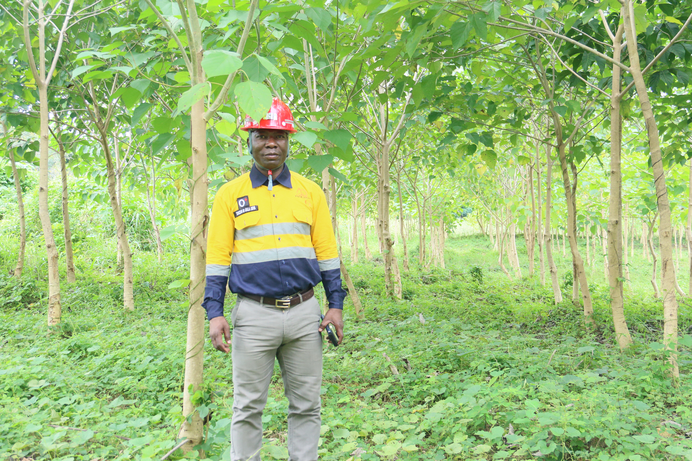
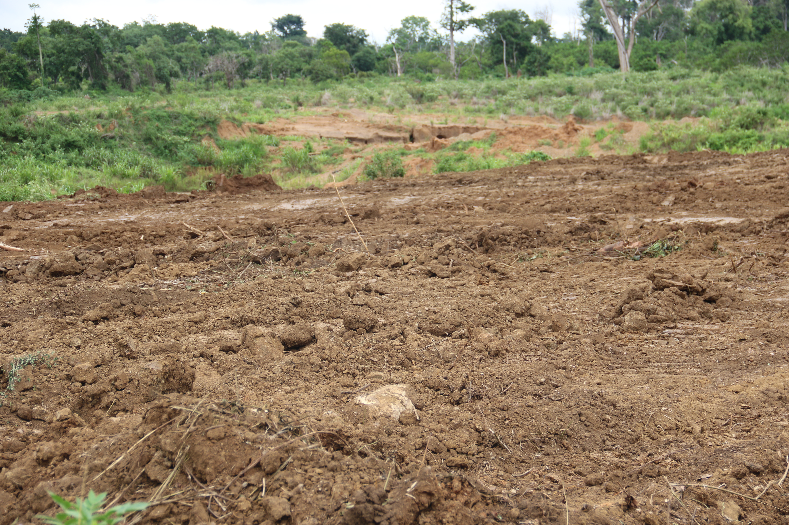
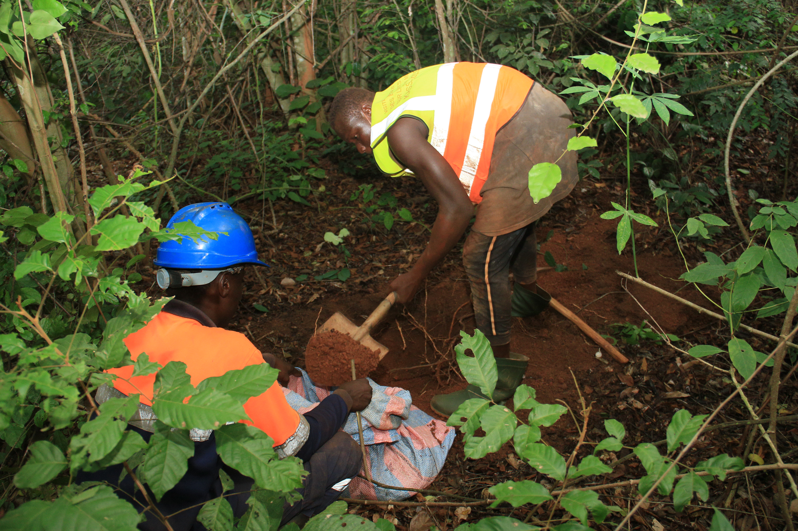
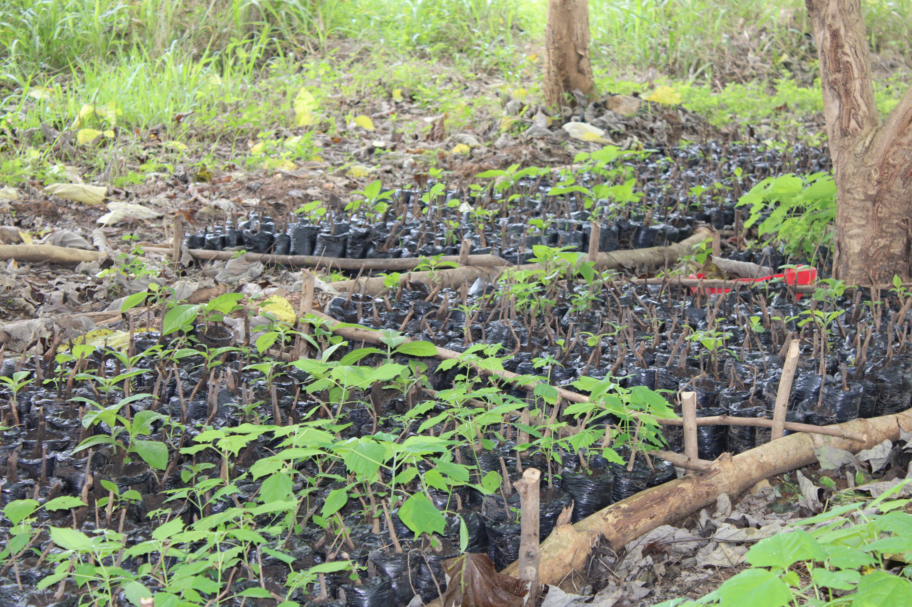
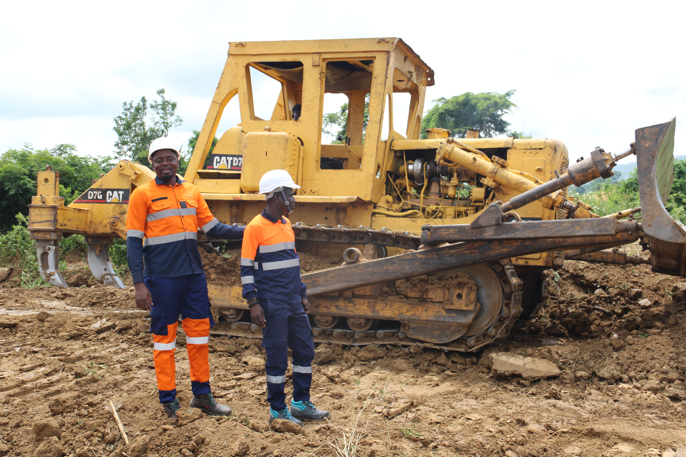

Mission
Restaurer durablement des terres impactees tout en soutenant des activites productives adaptees aux territoires.
A propos de SODAP-CI
Nous transformons des terrains impactes en espaces utiles, productifs et responsables, en associant rehabilitation environnementale, agriculture durable et impact local.
Notre identite
SODAP-CI developpe des interventions concretes pour redonner de la valeur a des zones degradees, avec une demarche sobre, lisible et mesurable.
Nous articulons chaque projet autour de la qualite d'execution, de la responsabilite environnementale et de la creation de valeur pour les communautes.
Restaurer durablement des terres impactees tout en soutenant des activites productives adaptees aux territoires.
Devenir une reference nationale en rehabilitation environnementale et agropastorale integree.

Nos principes
Nos actions s'appuient sur des valeurs stables pour garantir des projets utiles, durables et bien executes.
Protection des ecosystemes et gestion raisonnée des ressources.
Solutions adaptees aux realites techniques et sociales du terrain.
Execution rigoureuse, standards professionnels et resultats mesurables.
Collaboration avec les communautes pour un developpement inclusif.
Galerie missions


Yamoussoukro, quartier 50 logements, derrière l'école méthodiste
+225 27-33-75-73-12
lasodapci@gmail.com
Lundi - Vendredi
09:00 - 19:00
Samedi
09:00 - 12:00
Dimanche
Fermé




